Founder & CEO
Stacey Doorly-Jones
Senior-level technical expertise, analytical rigour, and donor-literate strategic thinking, brought to complex assignments at the intersection of gender justice, public health, and systems accountability.
Senior Consultant · Strategist · Qualitative Researcher · Technical Writer · Facilitator
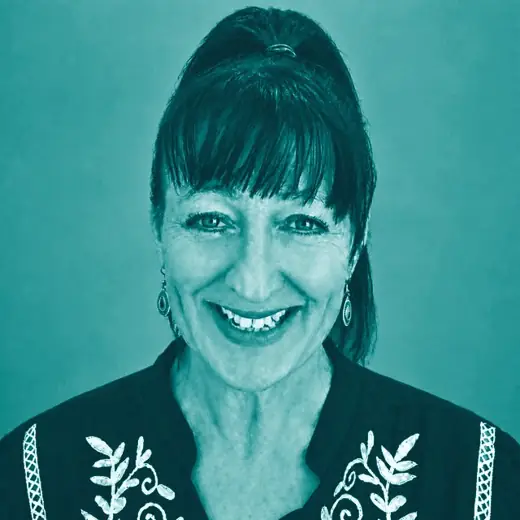
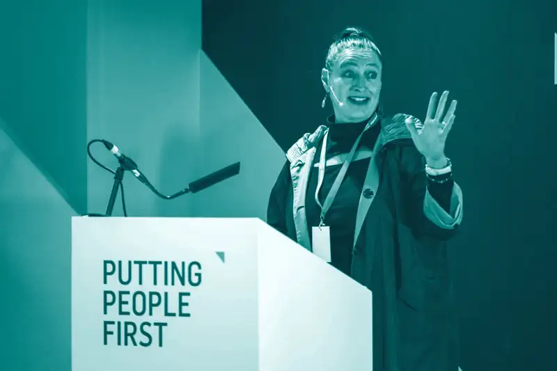
A practitioner with institutional range and implementation depth
Stacey Doorly-Jones is the founder and Chief Executive of STAND, and an independent senior consultant. She designs, leads, and delivers complex programmes, and builds the systems, relationships, and processes that let separate institutions deliver as one.
Over three decades her career has moved from financial services and corporate change management into public health, gender justice and complex institutional reform. That arc is unusual, and it is the point: she pairs the discipline of enterprise change leadership with the credibility of someone who has held her own at the executive boardroom table and in district coordination rooms, law-enforcement training environments and rural referral pathways. Her corporate years, including senior roles at TMA and Old Mutual, grounded her in disciplined delivery and client accountability. Her defining strength is translating strategy and evidence into implementation that functions in practice.
She operates with equal fluency in a donor briefing room, a municipal coordination meeting, a community-based field assessment, and a high-stakes proposal process, adapting how she communicates to each audience without ever diluting the substance.
Selected recent assignments
Current and recent work at the evidence-policy-practice interface.
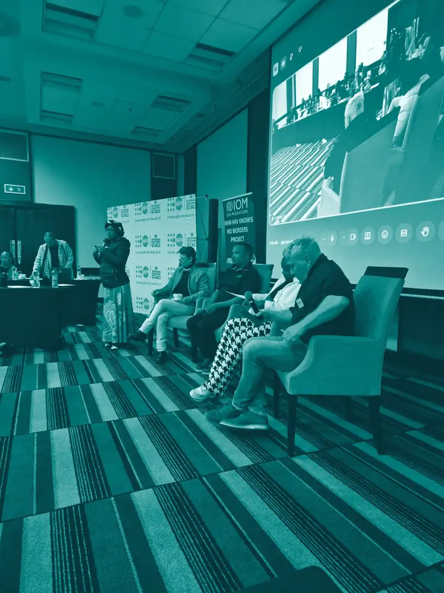
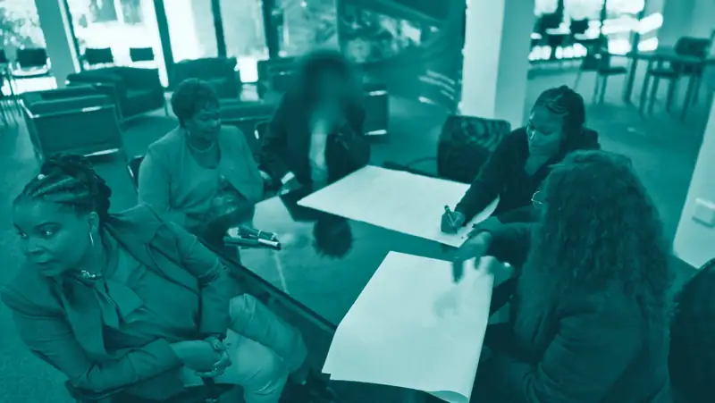
- Aug 2025 to Aug 2026 · Programme Lead, STAND / DG Murray Trust
Breaking the Cycle: gender-based violence (GBV) systems design and the Red Dot Process
Designed the Red Dot Process, a seven-stage, privacy-conscious GBV track-and-trace workflow on Overstrand Municipality's Citizen App. The GBV function went live on 24 August 2026; the first incident was dispatched to law enforcement on 27 August. Convened statutory partners through the Western Cape Violence Prevention Unit, which signed off the workflow, and embedded a community layer of 31 trained GBV ambassadors.
- 2025 to 2026 · Senior Technical Specialist and Advocacy Lead
Pregnancy and Substance Use Toolkit, national advocacy (EJAF / JMD Consulting / SANPUD)
Led district-to-national advocacy to position a practical, rights-based clinical toolkit for pregnant women affected by substance use within South African maternal and primary healthcare systems. The work was supported by the Elton John AIDS Foundation (EJAF), with the grant channelled through SANPUD, and delivered with JMD Consulting. Authored the final advocacy report, From Field Evidence to National Endorsement, and secured formal written support from the National Department of Health in June 2026, conditional on defined revisions. The Western Cape confirmed routes to incorporate the content into antenatal and community health-worker training.
- Mar 2025 · Key Facilitator and Technical Consultant
INTERPOL Regional Bureau for Southern Africa / SARPCCO
Key facilitator at the first regional Gender and Harm Reduction Workshop, convened with SARPCCO (the Southern African Regional Police Chiefs Cooperation Organisation), with representatives from 11 SADC member states. Developed evidence-informed policing modules and co-authored the report setting out ten regional recommendations, recognised with a formal Letter of Appreciation from the Head of the INTERPOL Regional Bureau / SARPCCO Coordination Office.
- Jul 2025 to Aug 2026 · Consultant and Lead African Consultant
Harm Reduction International, Breaking Point and the Divest/Invest series
Led the South Africa country rapid assessment of the impact of donor-funding withdrawal (34 key-informant interviews, 128 desk reviews and a national dialogue) and authored Breaking Point: The Impact of US Funding Cuts on Harm Reduction in South Africa. As Lead African Consultant for the Divest/Invest case-study series, authored three published country studies: South Africa (on the Community Oriented Substance Use Programme, COSUP), Mauritius, and Ghana.
Where her independent consulting is most relevant

Appointments, platforms and recognition
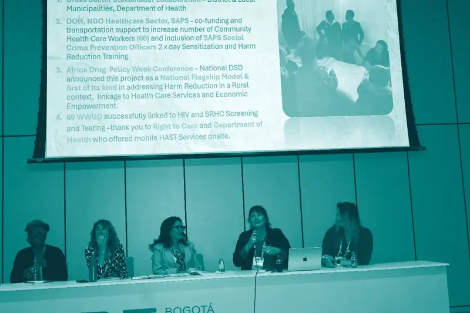
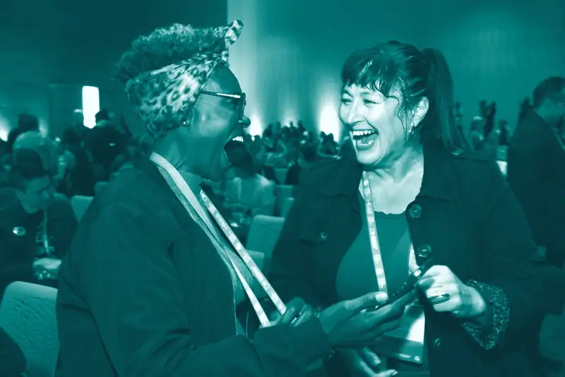
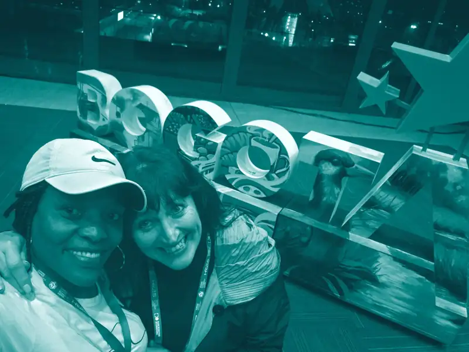
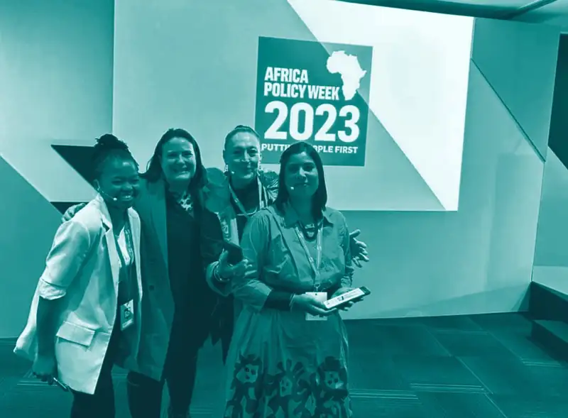
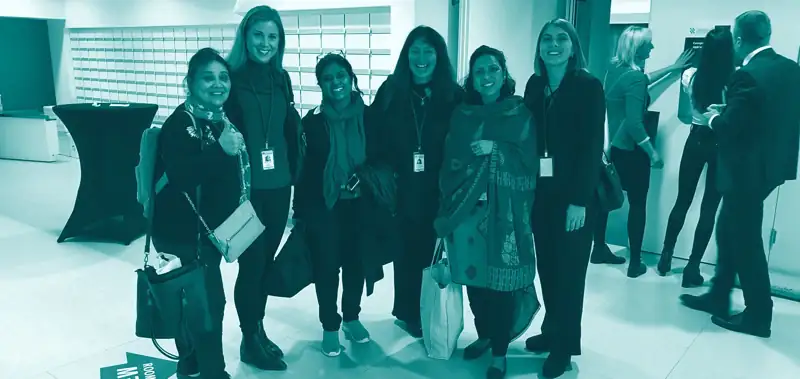
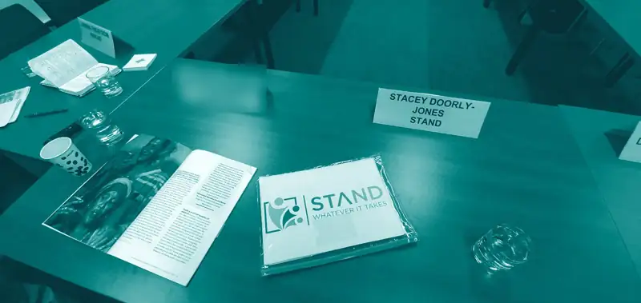
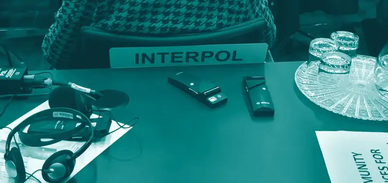
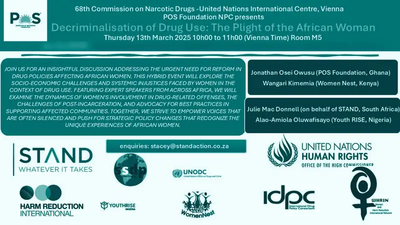
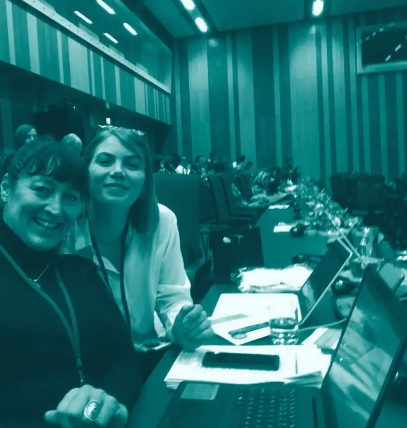

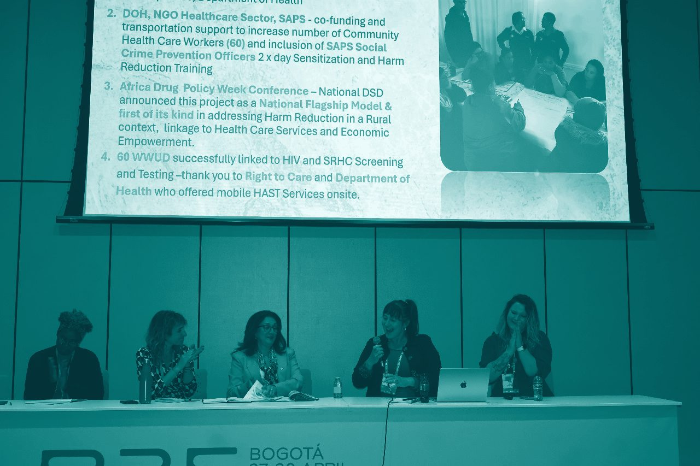
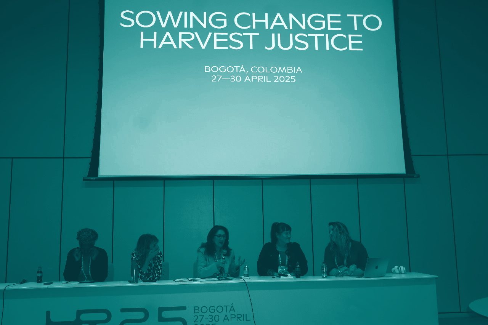
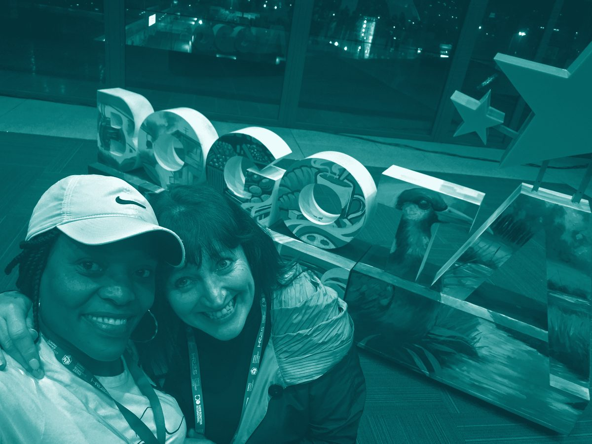
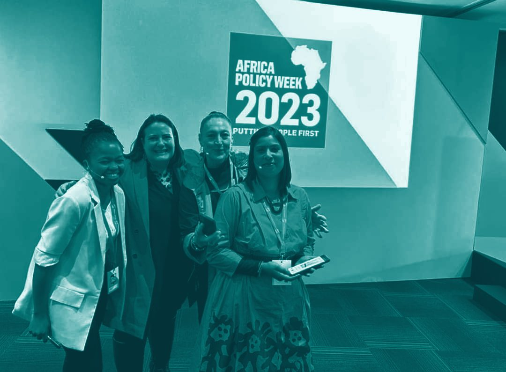
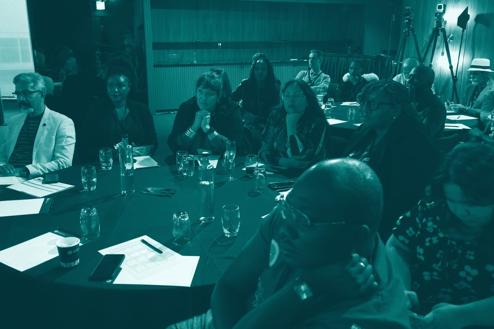
- 2025Convenor of Decriminalisation of Drug Use: The Plight of the African Woman at the 68th Commission on Narcotic Drugs, United Nations Vienna (March), and presenter at the 29th International Harm Reduction Conference (HR25), Bogotá (April).
- 2023Co-founder of the African Women Working in Harm Reduction Coalition; panellist at the United Nations Economic and Social Council Partnership Forum (January).
- 2020Presenter at the 63rd Commission on Narcotic Drugs, United Nations Vienna; founding member of the Global Gender Committee of the World Federation Against Drugs; and member of the Vienna NGO Committee on Drugs.
- 2019Finalist, Impumelelo Innovation Awards, for a rural, evidence-based outpatient community treatment model.
She has also taken part in the International Network on Health and Hepatitis in Substance Users (INHSU) forums.
Education and specialist training: Higher Certificate in Counselling and Interpersonal Skills (SACAP, 2016); Certificate in Leading Financial Sustainability (TSIBA, 2017); UNODC Training of Trainers, Evidence-Based Opioid Agonist Services (2023); Gender-Based Violence and Harm Reduction, UNODC / WHRIN (2024).
Available for specialist assignments
Stacey takes independent consulting assignments on a scoped, fee-for-service basis: technical writing, qualitative research, strategic advisory, facilitation, or bid and proposal support.